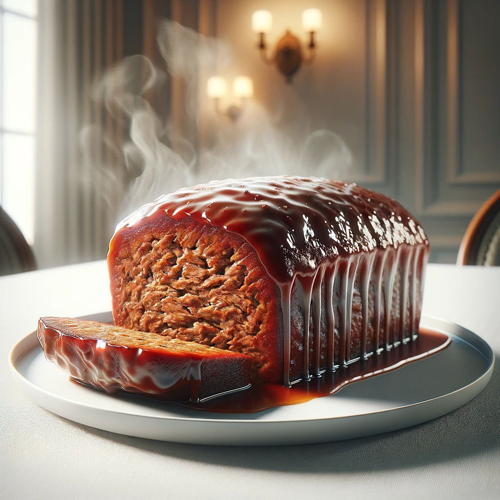

Grandma's Meatloaf

Description
Meatloaf is more than just a meal; it's a comforting embrace from my past, a connection to my roots, and a
testament to the simple joys of family dinners. This cherished meatloaf recipe, a treasure passed down through
generations in my family, embodies the warmth and love that have nourished us throughout the years.
Ingredients
For the Meatloaf:
- 2 pounds ground beef
- 1 onion, finely chopped
- 2 cloves garlic, minced
- 1 cup breadcrumbs
- 1/2 cup milk
- 2 eggs, beaten
- 1/4 cup ketchup
- 2 tablespoons Worcestershire sauce
- 1 teaspoon dried thyme
- 1 teaspoon dried oregano
- Salt and pepper to taste
For the Glaze:
- 1/2 cup ketchup
- 2 tablespoons brown sugar
- 1 tablespoon Dijon mustard
Steps:
- Begin by preheating your oven to 350°F (175°C).
- In a large mixing bowl, combine the ground beef, chopped onion, minced garlic, breadcrumbs, milk, beaten eggs, ketchup, Worcestershire sauce, dried thyme, dried oregano, salt, and pepper. Mix until all ingredients are well incorporated. This is the heart and soul of the meatloaf.
- Shape the meat mixture into a loaf shape and place it in a baking dish.
- In a small bowl, whisk together the ingredients for the glaze: ketchup, brown sugar, and Dijon mustard.
- Pour the glaze over the meatloaf, spreading it evenly to coat the top.
- Bake the meatloaf in the preheated oven for approximately 1 hour, or until it's cooked through and the internal temperature reaches 160°F (71°C).
- Once done, let the meatloaf rest for a few minutes before slicing.